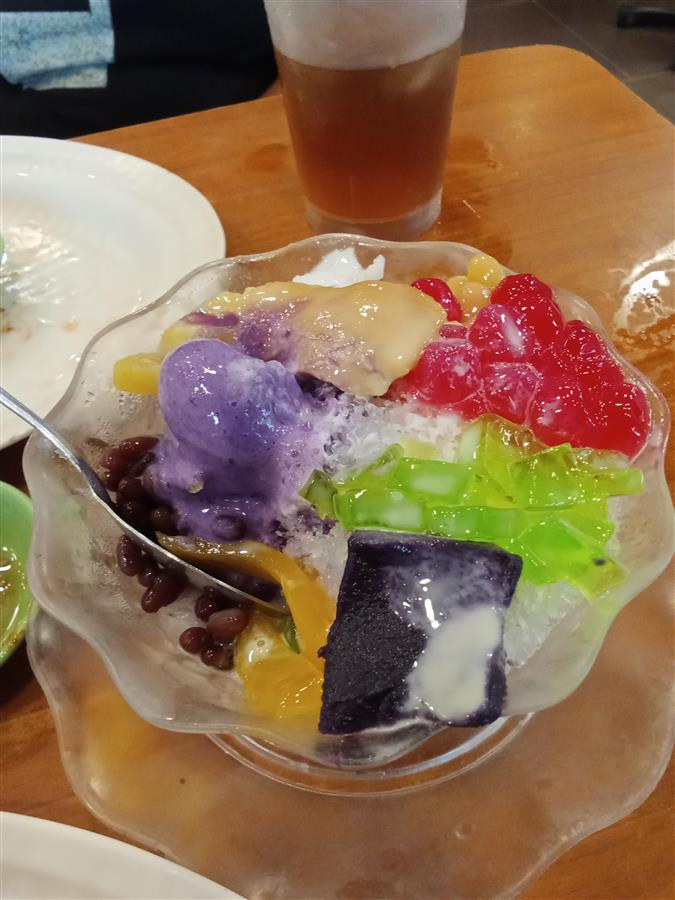
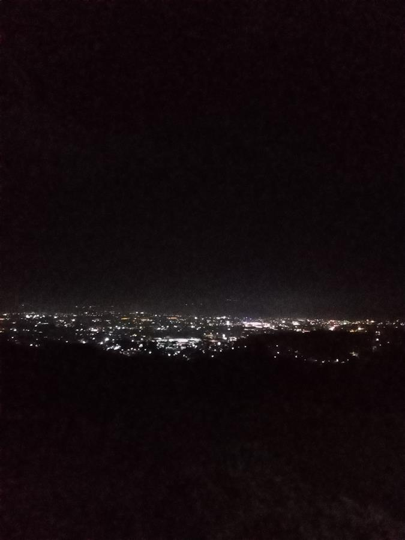
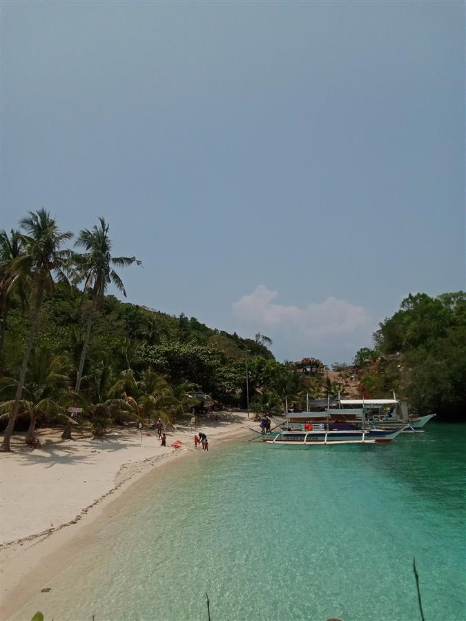
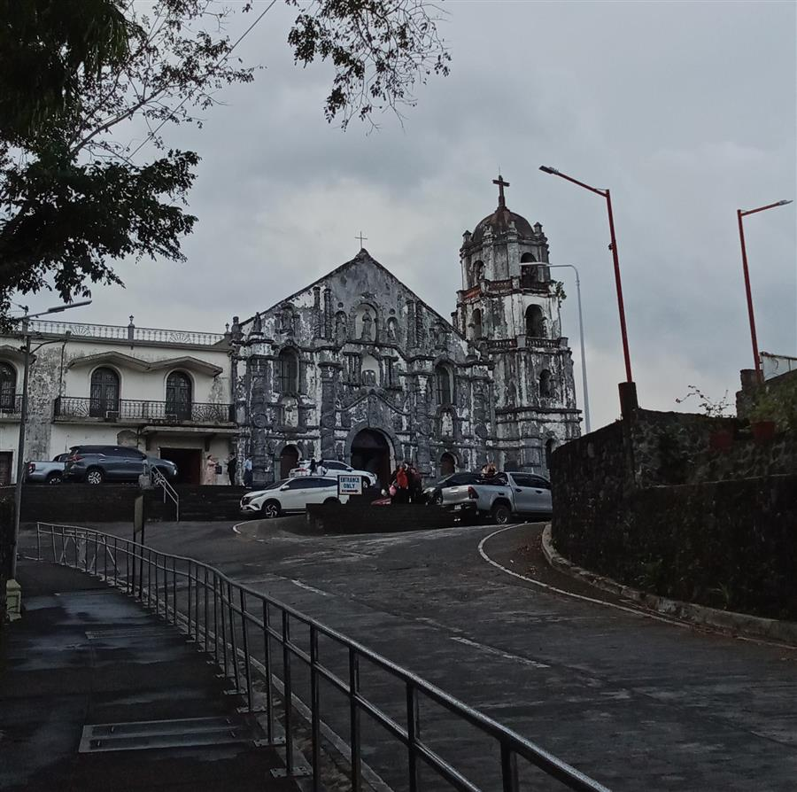
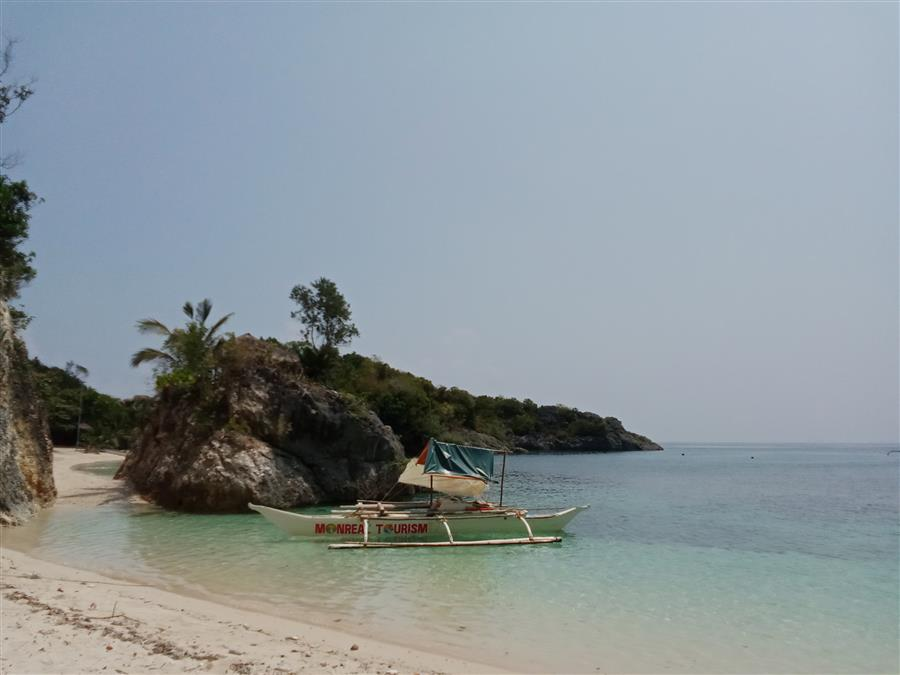
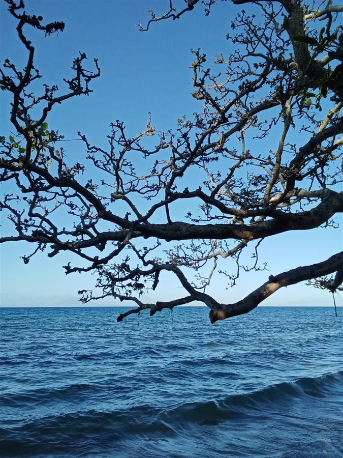
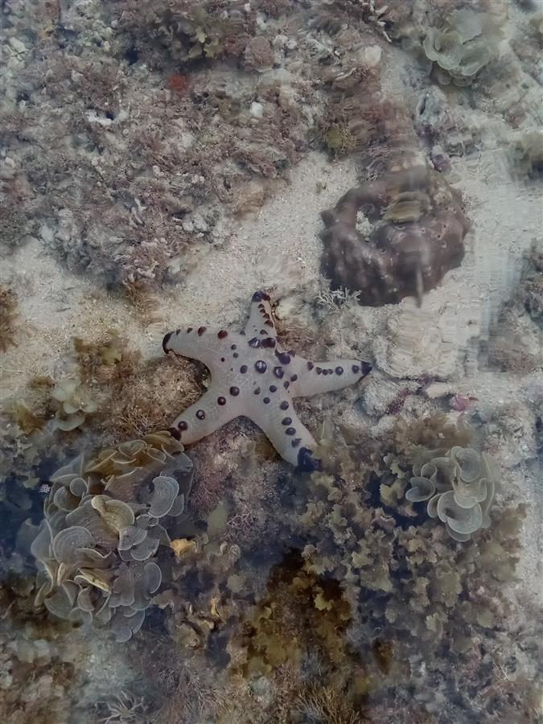
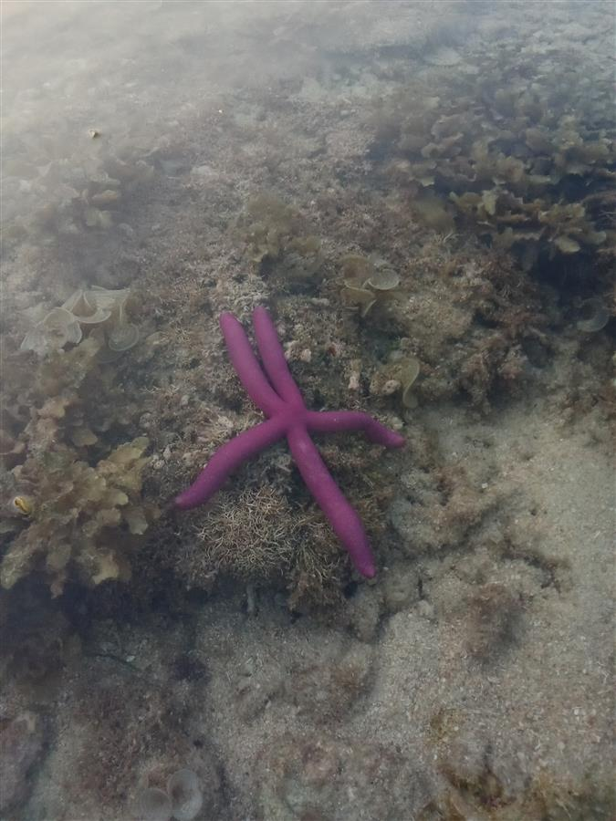

![]()
Hello!

Hello! My name is Darlene Mae Espejon Bustamante. I am a first-year BSCS
student at Bicol University. I live in Libmanan, Camarines Sur and now temporarily living in Daraga, Albay.
About Me
I personally love foods, that's why I love eating. Moreover, I consider myself a night person since I love the silence at night when everyone is sleeping, and that's when I enjoy my time alone. You can see some pictures of my hobbies below.
Hobbies
-
🍽️ Eating



-
📍 Exploring and visiting different places

Cagsawa Ruins, Daraga, Albay Photo by me 
Estanza Heights, Legazpi City, Albay Photo by me 
Halea Nature Park, Monreal, Ticao, Masbate Photo by me 
Morocborocan, Ticao, Masbate Photo by me 
Daraga Church, Daraga, Albay Photo by me -
📷 Photography







My Path into Computing
Actually, I chose Computer Science out of nowhere.
I was considering the priority courses/program for DOST scholarship before that's why.
Sadly, sometimes things didn't work out the way we expected, and I didn't get the scholarship.
Moving on, I do also love computers, so after carefully thinking of what I think would work for me, I chose this program.
I once dreamed of cooking codes, but as of now I am the one being cooked.
It's funny how clueless I am, then realized that I might have entered the wrong place.
But it's fine, I'm trying to fight here even though I find it difficult.
I genuinely want to learn how to code and make my own websites and applications.
And honestly I don't want to quit, so I'm trying. I am fully aware that this is just the start of my hardships.
I'm actually worried about what my future would look like. Since currently I'm experiencing difficulty in absorbing or understanding
our lesson in Math101 and I'm still not good in coding. I hope that I can do this despite of the challenges that are waiting for me.
Favorites
| Category | My pick | 💜 Why I love it |
|---|---|---|
| 🥢Comfort food | Sinigang | Whenever I'm stressed, eating sinigang makes me feel good. |
| 🍟Snack | Fries | This is a go-to food for me and my friends. |
| 🐾Pet | Cats & Dogs | These two have a special place in my heart, and my mother loves taking care of them. |
| 🎨Color | Purple & Violet | I love how these looks calm and reserved. |
| ☁️Weather | Rainy days | Whenever it's raining, it feels cozy for me. |
| 🥄Dessert | Ice cream | I love how cold and creamy this is. |
| 🍇Fruit | Grapes | I love the taste, and its color is just like my favorite color(what a silly reason). |
| 🎞️Movie Genre | Horror & Science fiction | These genres got me hooked. |
| 🌃Late-night activities | Late-night talks & Doomscrolling | Talking to someone helps me to reflect on what happened during my day, and doomscrolling entertains me after a busy day. |
This or that?
-
Sunrise or sunset?
Sunset
I love sunrises too, but sunsets are the best for me. I yearn for the colors of the sky. -
Beach or mountain?
Beach
I love the sound of the waves, and the view of the sea. -
White chocolate or dark chocolate?
Dark chocolate
I love the bitterness of dark chocolate, and white chocolate are too sweet for me. -
Music or podcasts?
Music
I love music, it helps me relax. -
Read a book or watch a movie?
Watch a movie
I'm not really a fan of reading. :>
Goals
Since this year is quite tough for me, my top goals for this year are to pass my first semester. Moreover, I want to be good at coding and improve in Math. Additionally, I also want to pass my first year. Then, I hope I finish my degree even though there are many future challenges.
Reflection
I have learned that if I want something to happen, I can make it happen. This is the lesson that came across me while I'm doing this webpage. Honestly, designing and thinking about my webpage is fun. I spent days thinking about what color palette should I use, how should I make my webpage not boring, and what are the things that I can add. This activity also gives me ideas on what can I do on my free time. Moreover, I also learned that doing things that you're interested in is not really hard. Sometimes, we just all need to be motivated in order for us to do something. Additionally, I learned that improving my activity is not that hard. Like changing the color palette, and adding some pictures. It just needs some simple steps and that's it.